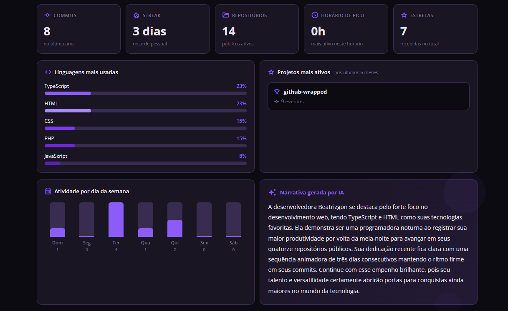
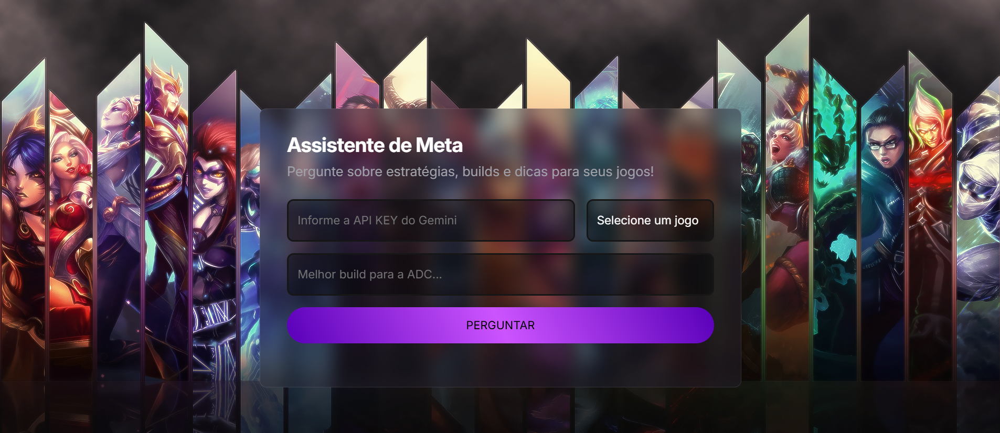
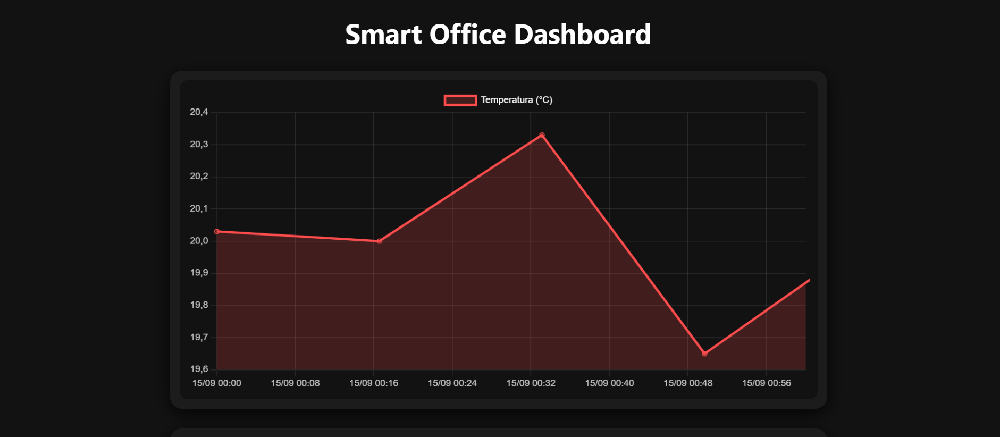
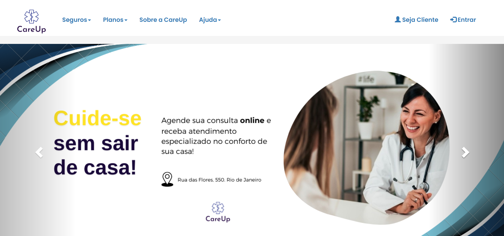

Front-end
React
JavaScript
TypeScript
HTML5
CSS3
Angular
Desenvolvo interfaces front-end com React e JavaScript, priorizando usabilidade e uma experiência intuitiva para as pessoas. Também integro APIs e aplico Inteligência Artificial para criar soluções úteis e conectadas às necessidades de cada projeto.
Sou Tecnóloga em Análise e Desenvolvimento de Sistemas e conquistei o 1º lugar no Coeficiente de Rendimento do curso.
Soluções reais desenvolvidas com foco em performance, usabilidade e inovação

Problema: encontrar repositórios em alta e acompanhar tendências exige buscas dispersas no GitHub.
Diferencial: integra a GitHub API para filtrar repositórios por preferência e apresentar dados de perfil em uma retrospectiva visual.

Problema: dúvidas sobre jogos competitivos pedem respostas contextualizadas para cada título.
Diferencial: assistente com IA integrada ao Gemini e foco em League of Legends, Genshin Impact e Valorant.

Problema: dados de progresso e de sensores IoT são difíceis de interpretar sem uma visão consolidada.
Diferencial: analisa KPIs e visualiza informações do Smart Office para facilitar o acompanhamento dos indicadores.

Problema: jovens de 18 a 25 anos precisam encontrar opções acessíveis de seguro de vida e planos de saúde.
Diferencial: site com fluxo full stack, incluindo autenticação, banco de dados e operações CRUD.

Problema: uma loja de doces precisa apresentar seus produtos em uma página clara e atrativa.
Diferencial: landing page com interação em JavaScript e funcionalidade CRUD.
Quer ver mais projetos?
Ver repositórios no GitHubTecnologias e ferramentas organizadas por área, com foco em desenvolvimento front-end
Minha jornada de aprendizado contínuo
As 5 Qualificações Profissionais da UNISUAM contemplam Front-End, Back-End, Mobile, Gerência de Projetos de Software e Infraestrutura e Arquiteturas para Suporte às Aplicações (340h cada).
Estou aberta a oportunidades em Front-End, tecnologia, IA aplicada e desenvolvimento web.